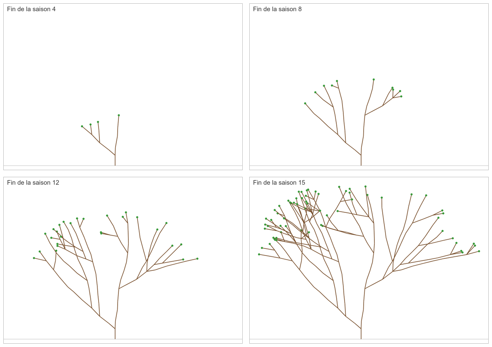
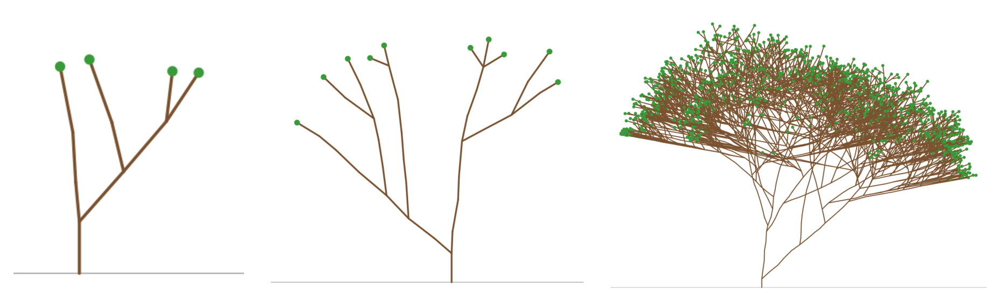

TI301 – Algorithmique et Structures de données 2 · Projet Informatique et Mathématiques
La forêt et la lumière Partie 1
Ce projet est rédigé en commun pour les modules SDD2 et Probabilités.
Idée originale, conception, réalisation : Nicolas FLASQUE Validation pour le module de probabilités : Federico ZALAMEA, Brice JUANICO Site web du projet et animations : Nicolas FLASQUE et Claude code pro - modèle Opus 5.5
On plante de jeunes arbres et on les laisse pousser, saison après saison.... Pour pousser, un arbre a besoin de lumière ; or les arbres se font de l'ombre. Un arbre qui prend la lumière pousse plus vite et fait de l'ombre aux autres arbres. Les arbres qui poussent moins vite ont moins de lumière et s'arrêtent de pousser.
Un arbre, au sens botanique, est aussi un arbre au sens informatique : le premier rameau sort du sol, puis de nouveaux rameaux naissent à son extrémité, et ainsi de suite.
Le but de ce projet est de simuler la pousse de forêts entières, de représenter chaque arbre par une structure d'arbre en C, d'en mesurer les caractéristiques et de les visualiser.
Les outils et les résultats que vous produirez seront ensuite utilisés dans le projet de mathématiques.
Dans ce sujet ne seront présentées que les notions essentielles pour la partie informatique.
Organisation du projet
Partie 1 Faire pousser au hasard un arbre seul, en pleine lumière, le mesurer et l'enregistrer dans un fichier ;
Partie 2 Faire pousser une forêt entière, dans laquelle les arbres se font de l'ombre ;
Partie 3 Simuler des milliers de forêts, analyser et visualiser les résultats.
1Qu'est-ce qu'un arbre ?
Il faut bien distinguer deux types d'arbres dans ce projet
les arbres qui « poussent » dans la simulation : ce sont les arbres à rameaux ;
les arbres 3-aires qui les représentent : ce sont les arbres informatiques.
Les rameaux des arbres à rameaux
Un arbre à rameaux est fait de... rameaux !. Chaque rameau est un petit segment, qui part de l'extrémité de son rameau parent. Le premier rameau, appelé le pied, part du sol.
Un arbre à rameaux est vu en 2D : l'axe \(x\) pour la direction horizontale (de gauche à droite - nous en aurons besoin pour les parties suivantes), l'axe \(y\) mesure l'altitude au-dessus du sol.
Pour chaque rameau, on stocke :
la position de son extrémité : \(x\) et \(y\) ;
sa longueur : une valeur float, entre 0.7 et 1.3, arrondie à un chiffre après la virgule;
sa direction : un angle en degrés, 0 pour un rameau vertical, positif s'il penche vers la droite, négatif s'il penche vers la gauche ;
la saison à laquelle il est apparu (0 pour le pied) ;
son état :
bourgeon son extrémité porte un bourgeon, qui pourra encore donner naissance à de nouveaux rameaux ;
bois de nouveaux rameaux sont déjà nés à son extrémité.
Les calculs de position \((x,y)\) des rameaux sont fournis.
L'arbre informatique
le pied est la racine (root) de l'arbre ;
les fils d'un rameau sont les rameaux nés à son extrémité ; un rameau a au plus 3 fils ;
les feuilles de l'arbre (les nœuds sans fils) sont exactement les rameaux qui portent un bourgeon.
La génération d'un nœud (rameau) est sa distance = profondeur au pied dans l'arbre : le pied est de génération 0, ses fils de génération 1, les fils de ses fils de génération 2, et ainsi de suite.
La hauteur de l'arbre informatique est la plus grande génération de ses rameaux. Attention à ne pas la confondre avec l'altitude des rameaux, qui est mesurée en unités de longueur.
Exemple
Voici un arbre de 10 rameaux, qui a poussé pendant 4 saisons. Le pied a son extrémité en (\(x\) = 4,5 ; \(y\) = 1,0). Les rameaux sont numérotés dans l'ordre où ils sont apparus :
Rameau
Saison
Parent
Direction
Longueur
Extrémité (x ; y)
Génération
État
0
0
–
0
–
(4,50 ; 1,00)
0
bois
1
1
0
0
1,0
(4,50 ; 2,00)
1
bois
2
1
0
−45
0,8
(3,93 ; 1,57)
1
bois
3
2
1
5
1,0
(4,59 ; 3,00)
2
bois
4
2
1
50
0,8
(5,11 ; 2,51)
2
bourgeon
5
2
1
−40
0,7
(4,05 ; 2,54)
2
bourgeon
6
3
3
0
1,0
(4,59 ; 4,00)
3
bois
7
3
2
−50
0,6
(3,47 ; 1,95)
2
bourgeon
8
4
6
−5
0,9
(4,51 ; 4,89)
4
bourgeon
9
4
6
45
0,7
(5,08 ; 4,49)
4
bourgeon
Par exemple, le rameau 2 part de l'extrémité du rameau 0, avec une direction de −45° et une longueur de 0,8 : \(x = 4{,}5 + 0{,}8 \times \sin(-45^\circ) \approx 3{,}93\) et \(y = 1{,}0 + 0{,}8 \times \cos(-45^\circ) \approx 1{,}57\).
La pousse de l'arbre de l'exemple (une saison = 0,6 seconde)
Un autre exemple :
La pousse d'un arbre de hauteur 23 (290 rameaux, 23 saisons, une saison = 0,4 seconde)
Lien entre l'arbre informatique et l'arbre que l'on fait pousser
Chaque nœud de l'arbre informatique est un rameau ; un lien de l'arbre informatique n'est pas un rameau, il indique seulement qu'un rameau est né à l'extrémité d'un autre. Survolez un nœud ou un rameau pour voir ses caractéristiques.
Arbre informatique
racine (le pied) en haut
Arbre informatique
racine (le pied) en bas
Arbre de rameaux
de profil, le pied en bas
nœud = rameau de boisnœud = rameau qui porte un bourgeonlien « est né à l'extrémité de »un rameau
2Étape 1 : Utiliser l'environnement
Section à venir.
3Étape 2 : la pousse d'un arbre en pleine lumière
Dans cette partie, l'arbre pousse seul, sans rien qui lui fasse de l'ombre.
À chaque saison, chaque bourgeon de l'arbre à rameaux (= feuille de l'arbre informatique) peut croître, selon les règles suivantes :
il pousse dans 95 % des cas ; sinon, il reste bourgeon et pourra croître à la saison suivante ;
s'il pousse, il donne 1 nouveau rameau dans 70 % des cas, 2 dans 25 % des cas et 3 dans 5 % des cas ;
son rameau devient alors du bois, et chaque nouveau rameau porte un bourgeon et devient un fils du rameau qui l'a produit ;
si un seul rameau pousse : ce nouveau rameau prolonge son parent : sa direction est celle du parent, modifiée d'un angle tiré au hasard entre −10° et +10° ;
si deux rameaux poussent :
le premier rameau prolonge son parent : sa direction est celle du parent, modifiée d'un angle tiré au hasard entre −10° et +10° ;
le second pousse à gauche ou à droite (une chance sur deux), en tournant d'un angle tiré au hasard entre 30° et 60° ;
si trois rameaux poussent :
le premier rameau prolonge son parent : sa direction est celle du parent, modifiée d'un angle tiré au hasard entre −10° et +10° ;
le second pousse à gauche ou à droite (une chance sur deux), en tournant d'un angle tiré au hasard entre 30° et 60° ;
le troisième pousse à gauche ou à droite (une chance sur deux), en tournant d'un angle tiré au hasard entre 30° et 60° ;
une direction est toujours ramenée entre −80° et +80° (une direction de 95° devient 80°) ;
chaque nouveau rameau a une longueur tirée au hasard entre 0,7 et 1,3.
1 rameau66,5 %223,75 %34,75%05%>
L'arbre à rameaux est planté avec un seul rameau : son pied (root), vertical, d'extrémité \((0\,;\,1)\), qui est un bourgeon à la saison 0. Il pousse ensuite pendant \(S\) saisons, numérotées de 1 à \(S\).
4Le hasard en C
La fonction rand() de la bibliothèque standard ne convient pas à ce projet.
Vous disposez d'un module fourni, alea.h / alea.c, à utiliser tel quel :
Fonction
Rôle
void alea_init(uint64_t graine)
initialise le générateur de nombres au hasard avec une graine
double alea_reel(void)
renvoie un nombre à virgule au hasard, entre 0 (compris) et 1 (non compris)
double alea_entre(double a, double b)
renvoie un nombre à virgule au hasard, entre a (compris) et b (non compris)
int alea_entier(int n)
renvoie un entier au hasard entre 0 et \(n - 1\), chaque valeur ayant la même chance d'être choisie
La graine. Un ordinateur ne fait pas vraiment de hasard : il calcule une suite de nombres qui ont l'air pris au hasard. Cette suite est entièrement déterminée par la graine : avec la même graine, on obtient exactement la même simulation. C'est très utile pour chercher une erreur, ou pour qu'une autre personne puisse refaire la même expérience.
Votre programme doit donc toujours permettre de choisir la graine.
Tirer dans une table
Pour choisir 1, 2 ou 3 nouveaux rameaux dans 70 %, 25 % et 5 % des cas, on tire un nombre \(u\) = alea_reel(), puis on renvoie 1 si \(u < 0{,}70\) ; sinon 2 si \(u < 0{,}70 + 0{,}25 = 0{,}95\) ; sinon 3. Chaque résultat correspond à une « tranche » de l'intervalle entre 0 et 1, dont la largeur est le pourcentage voulu.
12300,700,951
5Le code fourni
Pour que vous puissiez vous concentrer sur la pousse et les mesures de l'arbre, une partie du code vous est fournie. Lisez-la attentivement : elle vous montre comment l'arbre est représenté en mémoire.
Fichier
Contenu
arbre.h, arbre.c
les structures Rameau et t_arbre, la construction d'un arbre, la lecture d'un fichier d'arbre et l'affichage
dessin.h, dessin.c
le dessin de profil d'un arbre au format SVG, fixe ou animé
alea.h, alea.c
les nombres au hasard
main.c
un exemple d'utilisation : lire exemple1.txt, l'afficher, le dessiner et animer sa pousse
Les structures de données
Chaque rameau est un nœud de l'arbre. Un rameau ayant au plus 3 fils, ses fils sont rangés dans un tableau de 3 pointeurs (les cases inutilisées valent NULL). Cette structure sera réutilisée telle quelle dans les parties 2 et 3.
enum { BOURGEON = 0, BOIS = 1 };
typedef struct Rameau {
float x, y; // extrémité du rameau : position et altitude
float dir; // direction en degrés (0 = vertical)
short saison; // saison d'apparition
short gen; // génération (profondeur dans l'arbre)
unsigned char etat; // BOURGEON ou BOIS
unsigned char nb_fils; // 0 à 3
int num; // numéro du rameau (ordre d'apparition)
struct Rameau *fils[3]; // rameaux nés à son extrémité
} Rameau;
Pour retrouver rapidement le rameau qui correspond à un numéro, l'arbre garde aussi un tableau dynamique de pointeurs : la case \(i\) contient l'adresse du rameau numéro \(i\). Ce tableau est agrandi avec realloc (en doublant sa taille) quand il est plein.
typedef struct {
Rameau *pied; // premier rameau : la racine de l'arbre
Rameau **rameaux; // rameaux[i] = adresse du rameau numéro i
int nb_rameaux; // nombre de rameaux de l'arbre
int capacite; // nombre de cases allouées pour le tableau rameaux
} t_arbre;
Les fonctions fournies
Fonction
Rôle
creer_rameau
crée un rameau (bourgeon, sans fils) avec malloc
ajouter_fils
ajoute un fils à un rameau (refuse d'en ajouter un quatrième)
t_arbre creer_arbre(float x, float y)
crée un arbre ne contenant que son pied, d'extrémité (x ; y)
fait pousser un nouveau rameau à l'extrémité de parent : calcule son extrémité, sa génération et son numéro, l'ajoute aux fils de parent, fait passer parent à l'état bois et range le nouveau rameau dans le tableau de l'arbre
t_arbre lire_arbre(const char *nom)
construit l'arbre décrit dans un fichier (voir ci-dessous)
void afficher_arbre(t_arbre a)
affiche tous les rameaux de l'arbre, par numéro
void dessiner_svg(Rameau *pied, const char *nom)
écrit le dessin de profil de l'arbre dans un fichier SVG
écrit une animation de la pousse de l'arbre, saison par saison, dans un fichier SVG
Les fichiers d'arbres
Un arbre peut être décrit dans un fichier texte, qui a le format suivant :
Ligne 1 : x y : la position de l'extrémité du pied ;
Lignes suivantes, une par nouveau rameau, dans l'ordre où les rameaux sont apparus : saison parent direction longueur.
Les rameaux sont numérotés automatiquement : le pied porte le numéro 0, le rameau décrit à la ligne 2 porte le numéro 1, celui de la ligne 3 le numéro 2, etc. Le champ parent est le numéro du rameau à l'extrémité duquel le nouveau rameau est né. Par exemple, l'arbre décrit plus haut est contenu dans le fichier exemple1.txt :
Voici la fonction fournie qui lit un tel fichier. Remarquez qu'il suffit d'appeler pousser_rameau pour chaque ligne :
t_arbre lire_arbre(const char *nom_fichier) {
FILE *f = fopen(nom_fichier, "rt"); // lecture seule, texte
float x, y, dir, longueur;
int saison, parent;
t_arbre a;
if (f == NULL) {
perror("Impossible d'ouvrir le fichier");
exit(EXIT_FAILURE);
}
if (fscanf(f, "%f %f", &x, &y) != 2) {
perror("Impossible de lire la position du pied");
exit(EXIT_FAILURE);
}
a = creer_arbre(x, y);
while (fscanf(f, "%d %d %f %f", &saison, &parent, &dir, &longueur) == 4) {
// une ligne = un nouveau rameau, fils du rameau numéro 'parent'
pousser_rameau(&a, a.rameaux[parent], saison, dir, longueur);
}
fclose(f);
return a;
}
Les fichiers fournis décrivent tous des arbres corrects : la fonction ne vérifie pas leur contenu.
Le dessin au format SVG
Le format SVG est un simple fichier texte, que l'on ouvre avec un navigateur web. Le module de dessin y écrit un segment par rameau et un petit disque vert pour chaque bourgeon. Il parcourt l'arbre à l'aide d'une fonction récursive : elle dessine les segments qui vont de l'extrémité d'un rameau à celles de ses fils, puis s'appelle elle-même pour dessiner chacun des fils.
static void dessiner_rameau(FILE *f, Rameau *r, float rayon) {
for (int i = 0; i < r->nb_fils; i++) {
Rameau *fils = r->fils[i];
fprintf(f, " <line x1=\"%.1f\" y1=\"%.1f\" x2=\"%.1f\" y2=\"%.1f\"/>\n",
px(r->x), py(r->y), px(fils->x), py(fils->y));
dessiner_rameau(f, fils, rayon);
}
if (r->etat == BOURGEON) // un bourgeon : un petit disque vert
fprintf(f, " <circle cx=\"%.1f\" cy=\"%.1f\" r=\"%.1f\" .../>\n",
px(r->x), py(r->y), rayon);
}
Les fonctions px et py transforment les coordonnées de l'arbre en pixels de l'image. L'échelle est choisie automatiquement pour que l'arbre tienne dans l'image, qu'il ait 10 ou 10 000 rameaux.
L'animation de la pousse
La fonction animer_svg produit un fichier SVG animé, qui montre l'arbre pousser saison après saison quand on l'ouvre dans un navigateur web (touche F5 pour revoir l'animation). Elle utilise la saison d'apparition de chaque rameau (champ saison) :
chaque saison dure duree_saison secondes ; un compteur « Saison s » est affiché en haut à gauche ;
pendant toute la saison \(s\), les rameaux apparus à la saison \(s\) « poussent » : leur segment s'allonge régulièrement, sans pause d'une saison à la suivante ;
un bourgeon apparaît quand son rameau a fini de pousser, et disparaît quand son premier fils a fini de pousser : les bourgeons des nouveaux rameaux prennent alors le relais. Les bourgeons en dormance restent visibles.
L'animation est décrite en CSS, dans un élément <style> placé au début du fichier SVG. Chaque élément porte une classe (r pour un segment, b pour un bourgeon) et un délai (animation-delay) qui dépend de sa saison :
Voici quatre images de l'animation fournie animation_15_saisons.svg (graine 3, \(S = 15\), une saison = 0,6 seconde), à la fin des saisons 4, 8, 12 et 15 :

La pousse d'un arbre en pleine lumière, saison après saison
6Cahier des charges
Étape 1Prendre en main le code fourni
Récupérez les fichiers fournis, compilez-les et exécutez le programme d'exemple.
Ouvrez le fichier exemple1.svg produit dans un navigateur web.
Modifiez main.c pour lire, afficher et dessiner les trois autres arbres fournis : arbre_petit.txt, arbre_moyen.txt et arbre_grand.txt.
Dans votre rapport, faites un schéma de la mémoire après la lecture de exemple1.txt : la variable de type t_arbre, son tableau rameaux et les 10 rameaux, avec les pointeurs fils.
et les dessins des trois arbres fournis sont les suivants :

arbre_petit.txt (hauteur 3), arbre_moyen.txt (hauteur 8) et arbre_grand.txt (hauteur 30)
Étape 2Faire pousser un arbre en pleine lumière
Il s'agit maintenant de faire pousser un arbre au hasard, en suivant les règles présentées plus haut. Pour trouver les bourgeons, on parcourt simplement le tableau des rameaux par numéro.
L'algorithme à implémenter
Voici ce que fait une saison \(s\) pour un arbre. Pour que tout le monde obtienne exactement les mêmes arbres avec la même graine, les tirages doivent être faits dans cet ordre :
n = nombre de rameaux de l'arbre au début de la saison
Pour i de 0 à n - 1
b = rameau numéro i
Si b est un bourgeon
k = nb_nouveaux_rameaux()
Pour j de 0 à k - 1
Si j == 0
direction = direction de b + alea_entre(-10, 10)
Sinon si k == 2
cote = alea_entier(2)
angle = alea_entre(30, 60)
Si cote == 0 : direction = direction de b - angle (à gauche)Sinon : direction = direction de b + angle (à droite)Sinon si j == 1
direction = direction de b - alea_entre(30, 60) (à gauche)Sinon
direction = direction de b + alea_entre(30, 60) (à droite)
Ramener la direction entre -80 et 80
longueur = alea_entre(0.6, 1.4)
pousser_rameau(arbre, b, s, direction, longueur)
La boucle s'arrête au nombre de rameaux du début de la saison : les rameaux nés pendant la saison (rangés à la fin du tableau) ne poussent donc pas.
Fonctions à créer
une fonction int nb_nouveaux_rameaux(void) qui renvoie 0 si le bourgeon ne pousse pas, et sinon le nombre de nouveaux rameaux (1, 2 ou 3). Elle tire d'abord \(u\) = alea_reel() : le bourgeon ne pousse pas si \(u \geq 0{,}95\). S'il pousse, elle tire un second nombre avec alea_reel() pour choisir 1, 2 ou 3 dans la table ;
une fonction qui ramène une direction entre −80° et 80° ;
une fonction void saison(t_arbre *a, int s) qui fait jouer la saison \(s\) ;
une fonction t_arbre simuler_arbre(uint64_t graine, int S) qui initialise le hasard avec la graine, crée un arbre de pied d'extrémité \((0\,;\,1)\), puis fait jouer les saisons 1 à \(S\).
Validation de l'étape 2
Appelez 1 000 000 de fois nb_nouveaux_rameaux et comptez les résultats. Vous devez obtenir des nombres proches (à environ 2 000 près) de 50 000 fois 0 ; 665 000 fois 1 ; 237 500 fois 2 et 47 500 fois 3. Par exemple, on attend 1 rameau dans \(0{,}95 \times 0{,}70 = 66{,}5\,\%\) des tirages.
Deux simulations avec la même graine donnent exactement le même arbre ; deux graines différentes donnent (presque toujours) des arbres différents.
Avec la graine 5 et \(S = 3\), afficher_arbre doit afficher le même arbre que pour le fichier fourni arbre_petit.txt (les valeurs affichées sont arrondies à 2 chiffres après la virgule). De même, avec la graine 3 et \(S = 8\), vous devez retrouver arbre_moyen.txt, et avec la graine 4 et \(S = 30\), arbre_grand.txt (5 518 rameaux).
Dessinez les arbres obtenus avec dessiner_svg, et animez leur pousse avec animer_svg. Avec la graine 3, vous devez retrouver les animations fournies animation_8_saisons.svg (\(S = 8\)) et animation_15_saisons.svg (\(S = 15\)). Les 8 premières saisons des deux animations sont identiques : expliquez pourquoi dans votre rapport.
Étape 3Mesurer l'arbre avec des fonctions récursives
3.1 Les mesures
Il s'agit maintenant de calculer toutes les caractéristiques de l'arbre présentées dans le tableau ci-dessous, sans utiliser le tableau des rameaux par numéro : on part du pied et on suit les pointeurs fils.
Caractéristique
Signification
Exemple
Taille
nombre de rameaux (nœuds de l'arbre)
10
Hauteur
plus grande génération
4
Altitude de la cime
plus grande altitude y atteinte par l'extrémité d'un rameau
4,89 (rameau 8)
Nombre de bourgeons
nombre de feuilles de l'arbre
5 (rameaux 4, 5, 7, 8, 9)
Nombre de rameaux de bois
nombre de nœuds internes de l'arbre
5
Rameaux par génération
nombre de rameaux de chaque génération
1, 2, 4, 1, 2
La colonne « Exemple » donne les valeurs pour l'arbre de l'exemple (exemple1.txt).
Un arbre se prête très bien à la récursivité : chaque fils d'un rameau est lui-même le pied d'un « petit arbre », appelé sous-arbre. Par exemple, la taille du sous-arbre d'un rameau \(r\) vaut 1 (le rameau \(r\) lui-même) plus la somme des tailles des sous-arbres de ses fils. Pour un bourgeon, qui n'a pas de fils, elle vaut 1 : la récursivité s'arrête d'elle-même.
int taille(Rameau *r) {
int t = 1; // le rameau r lui-même
for (int i = 0; i < r->nb_fils; i++)
ajouter à t la taille du sous-arbre du fils numéro i
return t;
}
La taille de l'arbre entier est taille(a.pied). Inspirez-vous aussi de la fonction dessiner_rameau du module de dessin.
Structures et fonctions à créer
une fonction récursive pour chaque caractéristique : taille, hauteur, altitude de la cime, nombre de bourgeons, nombre de rameaux de bois ;
une fonction récursive qui remplit le tableau des rameaux par génération : ce tableau, de taille « \(\text{hauteur} + 1\) » et rempli de zéros au départ, est passé en paramètre, et chaque rameau ajoute 1 dans la case de sa génération ;
une structure « mesures » qui regroupe toutes les caractéristiques, une fonction qui calcule les mesures d'un arbre et une fonction qui les affiche.
Validation de l'étape 3.1
Vous devez obtenir les valeurs suivantes :
Fichier
Taille
Hauteur
Cime
Bourgeons
Bois
Rameaux par génération
exemple1.txt
10
4
4,89
5
5
1, 2, 4, 1, 2
arbre_petit.txt
10
3
4,13
4
6
1, 2, 3, 4
arbre_moyen.txt
38
8
8,38
10
28
1, 2, 2, 3, 4, 5, 5, 7, 9
arbre_grand.txt
5 518
30
30,84
1 432
4 086
1, 2, 2, 2, 2, 2, 4, 5, 5, 6, 8, 9, …
Votre programme vérifie aussi automatiquement les égalités suivantes, qui doivent toujours être vraies :
la somme des rameaux de toutes les générations est égale à la taille de l'arbre ;
la taille calculée par votre fonction récursive est égale au champ nb_rameaux de l'arbre ;
le nombre de bourgeons + le nombre de rameaux de bois est égal à la taille ;
pour un arbre simulé pendant S saisons, la hauteur ne dépasse jamais S, et elle augmente d'au plus 1 à chaque saison (testez-le pour 100 graines différentes).
En option3.2 L'arbre à une saison donnée
On veut maintenant mesurer l'arbre tel qu'il était à une saison \(s\) donnée : on ne tient compte que des rameaux apparus à la saison \(s\) ou avant. Attention : un rameau qui est aujourd'hui du bois était peut-être encore un bourgeon à la saison \(s\), si tous ses fils sont apparus après \(s\). Avec exemple1.txt, vous devez obtenir :
Saison
0
1
2
3
4
Taille
1
3
6
8
10
Hauteur
0
1
2
3
4
Altitude de la cime
1,00
2,00
3,00
4,00
4,89
Nombre de bourgeons
1
2
4
4
5
Étape 4Enregistrer un arbre dans un fichier
Écrivez une fonction void sauver_arbre(t_arbre a, const char *nom) qui écrit l'arbre dans un fichier, au format des fichiers d'arbres, pour qu'il puisse être relu par lire_arbre :
la première ligne contient la position de l'extrémité du pied ;
puis une ligne par rameau, du numéro 1 au dernier numéro : saison, numéro du parent, direction et longueur ;
les nombres à virgule sont écrits avec 4 chiffres après la virgule (%.4f).
La structure Rameau ne contient ni le numéro du parent, ni la longueur. Écrivez donc d'abord une fonction récursive qui parcourt l'arbre à partir du pied et qui remplit deux tableaux, indicés par le numéro du rameau (champ num) : le numéro du parent de chaque rameau et sa longueur. La longueur d'un rameau se calcule à partir de son extrémité et de celle de son parent :
$$\ell = \sqrt{(x - x_{\text{parent}})^2 + (y - y_{\text{parent}})^2}$$
fonction sqrt de <math.h>
Il ne reste plus qu'à écrire les lignes dans l'ordre des numéros.
Validation de l'étape 4
Lisez exemple1.txt, enregistrez-le dans un nouveau fichier, relisez ce fichier : l'affichage est identique.
Simulez un arbre avec la graine 5 et \(S = 3\) et enregistrez-le : le fichier obtenu est le même que arbre_petit.txt (comparez-les avec la commande fc sous Windows ou diff sous Linux et macOS). De même avec arbre_moyen.txt. Pour arbre_grand.txt, quelques longueurs peuvent différer sur leur dernier chiffre, selon que vous faites le calcul avec des float ou des double.
Un arbre simulé, enregistré puis relu, a les mêmes mesures (la cime à 0,001 près).
Étape 5Libérer la mémoire
Écrivez une fonction qui libère toute la mémoire utilisée par un arbre : tous les rameaux et le tableau des rameaux par numéro. Pour vous entraîner, libérez les rameaux avec une fonction récursive qui parcourt l'arbre à partir du pied, et non avec le tableau des rameaux par numéro. Attention à l'ordre : on ne peut plus lire les fils d'un rameau une fois qu'il a été libéré.
Validation de l'étape 5
Simulez puis libérez 100 000 arbres de suite dans une boucle (graines 1 à 100 000, \(S = 8\)). La mémoire utilisée par votre programme (visible dans le Gestionnaire des tâches) doit rester stable.
En optionDessiner l'arbre informatique avec Mermaid
Pour dessiner l'arbre informatique (et non plus l'arbre de profil), on peut utiliser l'outil en ligne et gratuit Mermaid : https://www.mermaidchart.com/. Voici le fichier à produire pour l'exemple :
On y retrouve des directives de configuration (à conserver), les rameaux (R suivi du numéro du rameau, puis le numéro à afficher dans le cercle) et les liens entre chaque rameau et ses fils. Écrivez une fonction (récursive) qui produit ce fichier, puis copiez/collez son contenu dans l'éditeur de Mermaid. Votre fonction refusera de produire le fichier au-delà de 100 rameaux, avec un message d'explication. Testez-la avec exemple1.txt et arbre_moyen.txt.